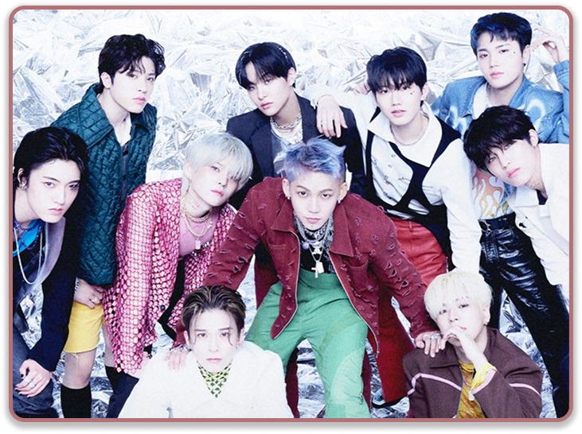
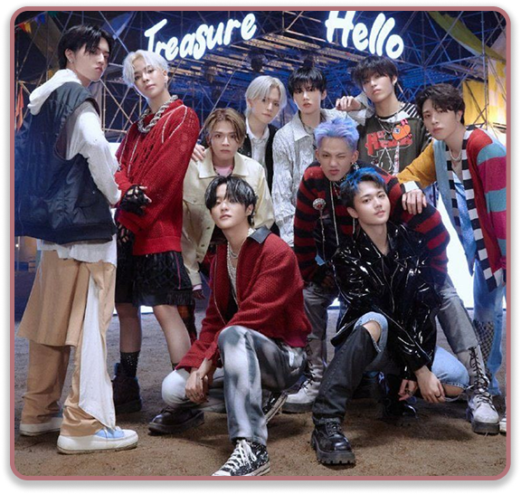

THE SECOND STEP:
CHAPTER TWO
Songs:
- HELLO
- VOLKNO
- CLAP
- THANK YOU
The Second Step: Chapter Two is the second mini-album by TREASURE. This era was particularly significant as it marked the group's first official release as a 10-member group, following the hiatus (and eventual departure) of Mashiho and Bang Yedam.
"HELLO" is the high-energy title track of THE SECOND STEP : CHAPTER TWO, released in October 2022. The song is a warm invitation. After a period of transition for the group and the world coming out of the pandemic, the lyrics express the excitement of finally meeting someone (or the fans) and saying, "Hello." Next, VolKno (Rap Unit: Choi Hyunsuk, Yoshi, Haruto). This song genre was hiphop & hard rock. The title combines "Volcano" and "Volk" (people). It captures the raw energy of the three rappers, with a "nu-metal" influence that features heavy guitar riffs and aggressive shouting. It's the "darker" counterpart to the bright title track.
Their 3rd song of this album “Clap” come with vibe and genre funky and bright pop. This song was produced and written fully by Asahi, this song was inspired by the simple joy of children's songs (specifically "If You're Happy and You Know It"). It encourages listeners to clap away their worries and find happiness in the small moments of everyday life. Next, THANK YOU (Unit: Asahi & Haruto). The genre was pop-rock but the vibe was emotional but fast-paced; feels like a high-energy anime opening. This is also a song that was written and composed by Asahi, this song explores the bittersweet feelings of a breakup. It expresses a late realization of gratitude toward a past lover, ending with a magnificent guitar solo that highlights its rock roots. Last but not least, HOLD IT IN. The genre was ballad pop and the vibe was subdued, emotional, and comforting. This song was composed and written the oldest member, Choi Hyunsuk. This track is about keeping one's feelings hidden or "buried" to avoid hurting others. It features marching drum beats toward the end, giving it a grand, sentimental feeling—perfect for a concert finale.
PHOTOS

